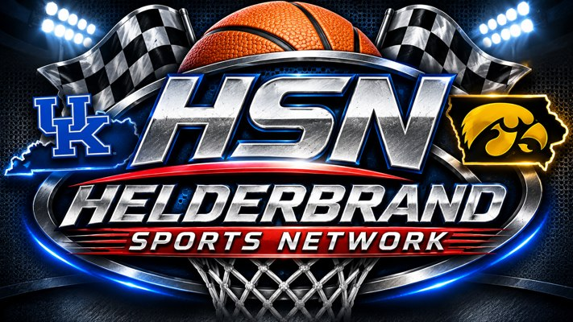

Streaming services open separately; you may need to find and select the game. Direct playback cannot be guaranteed.
Settings are saved in this browser. Use arrow keys and Enter on a remote. Press Down from the final row to reach pinned games.